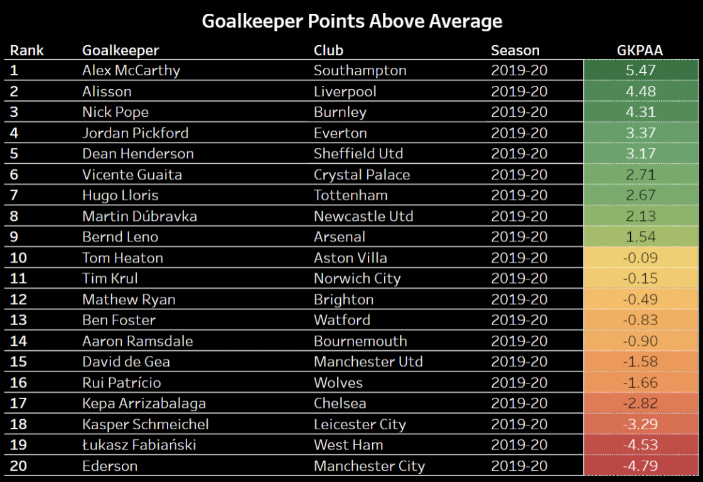

-
Which Goalkeepers Add The Most Points?
by Avi Rajendra-Nicolucci - January 7, 2021
|
avirn@umich.edu
Assessing an individual soccer player’s impact is notoriously difficult because of the sport’s low scoring nature and lack of measurable and meaningful events. However, goalkeepers stand out because they tend to play the most minutes and have one main job: preventing the opposition from scoring. I came up with a metric called Goalkeeper Points Above Average (GKPAA) that attempts to assess how many points a goalkeeper adds or loses to a team while controlling for factors out of a goalie’s hands.
Here are the results for the 2019/20 Premier League season and my method is detailed below. I was a bit surprised to see Ederson at the bottom here but because Manchester City underperformed their underlying metrics by so much last season the model ended up punishing him. Earlier versions of this model failed to take into account over/underperformance and had Alisson adding 15 points and Ederson losing 12 which seemed unreasonable. The final model did a much better job but just something to keep in mind. To qualify for this goalkeepers had to be listed on FBref as the sole keeper over the course of a season. This is why some players were excluded because they split minutes.

I have created a Tableau dashboard which allows you to filter by season, club, player and league which you can access here: https://public.tableau.com/shared/369D36Q3K?:display_count=y&:origin=viz_share_link
Goalkeeping Metrics
Up until recently publicly available shot-stopping stats was basically limited to Save%. Then FBref.com added Post-Shot Expected Goals (PSxG) data from StatsBomb. Here’s an excerpt explaining PSxG:
“Regular xG, or what can be considered "Pre-Shot xG", is calculated considering all shots at the time of the shot without knowing the quality of the shot attempt. It not only includes shots that are on target, but also shots that are deflected or off target. Post-Shot xG is calculated after the shot has been taken, once it is known that the shot is on-target, taking into account the quality of the shot.”
--- From FBref.com
Basically PSxG is assessing the likelihood of the shot going in based on shot-trajectory, speed and other factors. So a shot from 40 yards out will have a miniscule xG value but if it’s smashed towards the top right corner the PSxG will reflect that with a higher value.
This means that we can assess a goalkeeper's performance better than with xG. One popularly cited stat is PSxG+/- which is the PSxG - Goals Conceded . So theoretically a goalkeeper that is above average at stopping shots (or lucky) will have conceded less goals than expected in the PSxG model. It is important to note though that PSxG is not a perfect stat.
If you aren’t interested in the details of the model skip down to the Case Studies section.
Method
Where we go from here was inspired by Tej Seth (@mfbanalytics on Twitter) who wrote a great article. on assessing how many wins NFL quarterbacks add to their teams. That inspired me to look at goalkeepers who are probably the closest equivalent to a quarterback in terms of their influence on one side of the ball and how consistently they play. I wanted to know which goalkeepers were adding the most points to their teams when adjusting for other factors.
I started trying to use a linear regression but ran into issues of multicollinearity because the xGA for teams was highly correlated with their goalkeepers’ Save%AE. After some advice from Piotr Wawrzynów (@pwawrzynow on Twitter) I decided to use a Random Forest Regression which would eliminate the issue of multicollinearity.
The features I inputted were a team’s Expected Goal Difference, Offensive Overperformance, Defensive Overperformance and their goalkeeper’s Save Percentage Above Expected in that particular season. All of the xG stats were per 90 minutes because not all leagues play the same amount of matches. Let’s look at what those features are made of.
1. Expected Goals Difference
This is similar to regular goal difference. It is the difference between the amount of goals a team is expected to score and the amount of goals they are expected to concede. This is highly correlated with a team’s points which makes it the main driver behind the expected points model.
2. Offensive Overperformance
Offensive Overperformance is the difference between Goals Scored and Expected Goals. Because expected goals models are not perfect, making the expected points model just using expected goal difference would overly punish or reward goalkeepers whose teams over or underperformed expected goals (see Liverpool 2019/20).
3. Defensive Overperformance
Defensive Overperformance is the difference between Goals Conceded and Expected Goals Conceded. Similarly to Offensive Overperformance I wanted a way to control for a team's over/under performance and luck.
4. Save Percentage Above Expected
Another way of assessing a goalie’s impact is to look at the stat PSxG/SoT — where SoT denotes shot on target. This stat represents the average quality of the shot a goalkeeper faced and therefore (PSxG/SoT) x 100 is the percentage of shots on target you would expect a goalie to concede. Therefore, (1 - (PSxG/SoT)) x 100 is the percentage of shots you would expect a goalie to save. Voila! We have a new way of assessing a goalkeeper.
I call it Expected Save Percentage or xSave%, it has an r-squared of 0.997 when compared with Save%. Subtracting a player’s Save% from their xSave% can give us Save Percentage Above Expected or Save%AE. Similarly to PSxG+/- this can give us an idea of how a goalkeeper performs.
The variable I tried to predict was a team’s points per game (later multiplied by the matches played to get total points). I trained the model on Europe’s Top 5 League data from FBref.com from the 2017/18 season to the 2019/20 season. I only used the last three seasons because PSxG was first added in 2017/18. I tested the model on the 2020/21 season so far and the model’s expected points has an r-squared of 0.979 with the actual points thus far.
To see how many points a goalkeeper added I set the Save%AE to zero while keeping the other variables unchanged to see how many points the team would achieve with an average goalkeeper. I then subtracted the team’s actual points from their projected points with an average goalie to get GKPAA.
People often talk about how valuable goalkeepers can be to clubs, now we have a way of seeing just how many points a goalkeeper can add or lose. I think this metric is best evaluated at the end of the season when luck has likely evened out and you can truly evaluate a keeper’s impact on the team.
In the three and a half seasons of this model, Antonio Adán added the most points in 2017/18. He added over 8 points to a Real Betis team who punched above their weight finishing 6th in La Liga and qualified for the Europa League.
I have added here the top five and bottom five performers in GKPAA from the 2019/20 and so far in the 2020/21 season in Europe’s top five leagues.
I would like to say it’s too early to be drawing conclusions from this model about this current season. We aren’t even halfway done with it so be warned. As you can see here Mathew Ryan of Brighton is in last, I suspect it’s down to Brighton’s underperformance of expected goals this season. Expect him and Brighton to have bounced back by the end of this season.
Also, a players’ performance in this model is best observed in a single season. GKPAA, like PSxG, seems to be unstable from season-to-season.
It seems like the best and worst goalkeepers can make a difference of around 6 points, which is equivalent to two wins. I think this is reasonable and matches what many around the game have said about a goalies impact.
It makes sense why clubs that are challenging for titles are willing to shell out large sums of money for a goalkeeper. Six points is often more than the margin between winning the league and not or can make the difference in a relegation battle.
Case Studies
One of the highest profile goalkeeping situations is Kepa Arrizabalaga. Chelsea spent a whopping $88 million on him back in 2018 when his market value according to Transfermarkt was just $22 million. In the 2017/18 season he was a below average goalkeeper according to GKPAA which makes his transfer more confusing. The purchase of Kepa looks like one of the worst transfer deals of all time in terms of value.
Chelsea’s goalkeeper woes with Kepa led them to buy Edouard Mendy this season. After above average seasons in 2018/19 and 2019/20, Mendy is so far having a terrible season. Mendy is more than 11 points below average to this point. However, we’ll have to see how he fairs over the course of the season to make a definitive judgement.
Back in 2018 Real Madrid bought Thibaut Courtois to replace Keylor Navas for $38.5 million. It was a move many questioned because Navas was so highly regarded. But in hindsight, it looks like the right decision.

Hopefully this model can help people better evaluate a goalkeeper’s value to a team. Sometimes, being average isn’t so bad.
If you have any questions or would like to see more analytics content follow me on Twitter @avi_rn and @NUFCAnalytics and don’t hesitate to reach out!
Acknowledgments
Tej Seth for inspiring this project with his QBWAA project for the NFL
Piotr Wawrzynów for his help with the model
FBref.com for the public data that made this project possible
Mitchel Green for his feedback